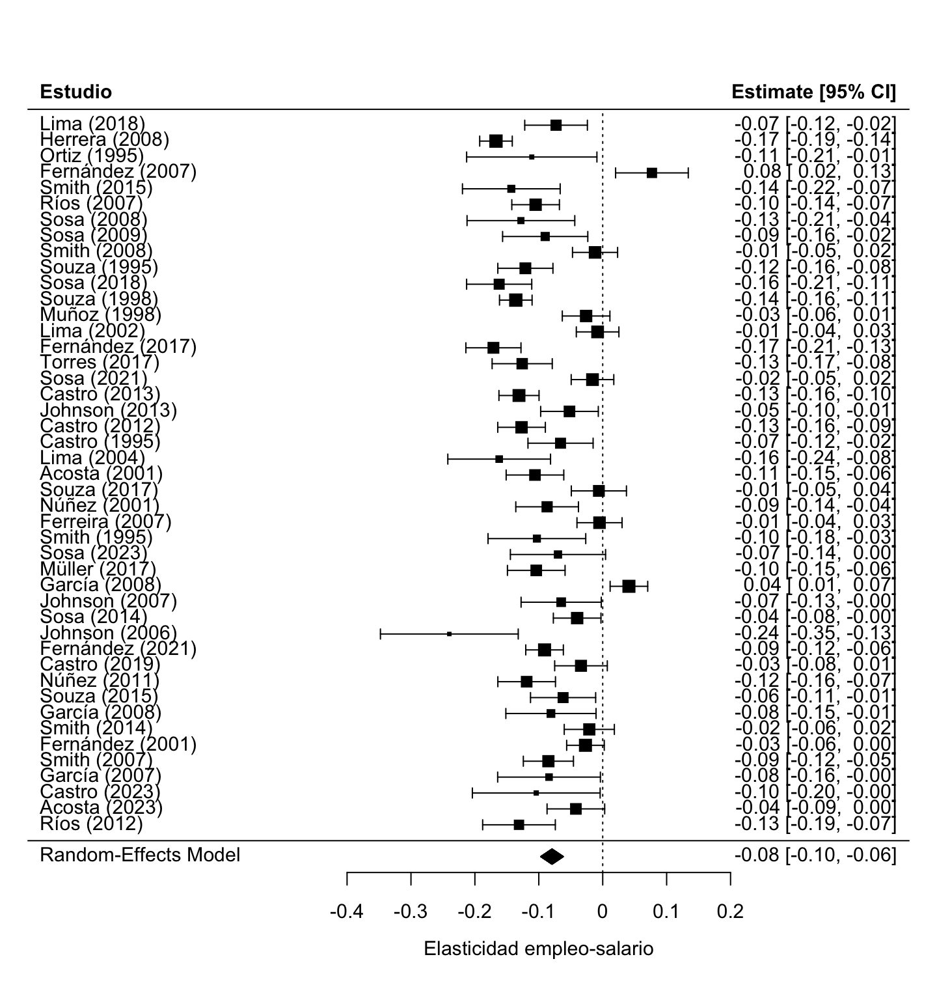
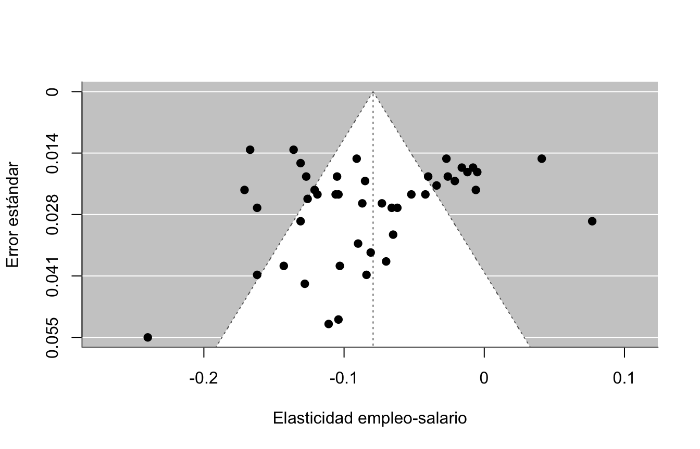

library(tidyverse)
library(metafor)
datos <- read_csv("datos/meta_salario.csv", show_col_types = FALSE)Tarea 4: Acumulación de evidencia — Respuestas
Práctica · salario mínimo y empleo
Esta es la clave de respuestas de la Tarea 4. Cada bloque trae la solución y, debajo, un comentario con los números. Salen con la semilla de los datos; si corriste la tarea, deberías obtener lo mismo.
1 Combinar
1.1 Pregunta 1: el efecto combinado
m <- rma(yi = efecto, sei = ee, data = datos)
m
Random-Effects Model (k = 45; tau^2 estimator: REML)
tau^2 (estimated amount of total heterogeneity): 0.0029 (SE = 0.0008)
tau (square root of estimated tau^2 value): 0.0539
I^2 (total heterogeneity / total variability): 85.90%
H^2 (total variability / sampling variability): 7.09
Test for Heterogeneity:
Q(df = 44) = 352.5155, p-val < .0001
Model Results:
estimate se zval pval ci.lb ci.ub
-0.0793 0.0090 -8.8535 <.0001 -0.0969 -0.0617 ***
---
Signif. codes: 0 '***' 0.001 '**' 0.01 '*' 0.05 '.' 0.1 ' ' 1Respuesta: el efecto combinado da −0,079, con un intervalo de [−0,097; −0,062]: en promedio, la literatura publicada estima que subir el salario mínimo baja el empleo, con una elasticidad pequeña. Pero el \(I^2\) es 85,9%: casi todo el desacuerdo entre estudios es real, no azar de muestreo. Con un \(I^2\) tan alto, el promedio esconde más de lo que muestra; no resume bien a nadie, y la pregunta interesante pasa a ser qué explica que los estudios difieran tanto.
1.2 Pregunta 2: el forest plot
forest(m, slab = datos$estudio,
xlab = "Elasticidad empleo-salario", header = "Estudio")
Respuesta: las filas no se parecen entre sí: hay estudios pegados al cero y otros bastante negativos, sin un centro claro. El rombo del efecto combinado se para en −0,08, pero pasa por una zona intermedia donde no se concentran los estudios: algunos quedan claramente a su izquierda y otros a su derecha. Es la firma visual de una heterogeneidad alta; el promedio describe un punto por el que casi ningún estudio pasa.
2 Buscar el sesgo
2.1 Pregunta 3: el funnel plot y el test de Egger
funnel(m, xlab = "Elasticidad empleo-salario", ylab = "Error estándar")
regtest(m)
Regression Test for Funnel Plot Asymmetry
Model: mixed-effects meta-regression model
Predictor: standard error
Test for Funnel Plot Asymmetry: z = -2.1469, p = 0.0318
Limit Estimate (as sei -> 0): b = -0.0306 (CI: -0.0781, 0.0169)Respuesta: el embudo sale torcido: en la banda de abajo (los estudios chicos, de error grande) faltan puntos en la esquina derecha, la de los efectos cercanos a cero o positivos. El test de Egger lo confirma con \(p = 0{,}03\): la asimetría no es casualidad. La historia que sugiere es un cajón con forma: los estudios chicos que encontraron “el salario mínimo no afecta el empleo” tuvieron menos chance de publicarse que los que encontraron un efecto negativo y significativo. Lo que llegó a las revistas está inclinado hacia el resultado más negativo.
2.2 Pregunta 4: dos chequeos del cajón
grandes <- filter(datos, ee <= 0.03)
round(c(
publicados = unname(coef(m)),
solo_grandes = unname(coef(rma(yi = efecto, sei = ee, data = grandes)))
), 3) publicados solo_grandes
-0.079 -0.071 tf <- trimfill(m)
c(estudios_imputados = tf$k0,
efecto_corregido = round(unname(coef(tf)), 3))estudios_imputados efecto_corregido
10.000 -0.059 Respuesta: los dos chequeos apuntan al mismo lado. Los estudios grandes, que se publican con cualquier resultado, dan −0,071, menos negativo que el −0,079 de todos los publicados: los chicos arrastran el promedio hacia abajo, justo lo que hace un cajón sesgado. Y trim-and-fill imputa 10 estudios “faltantes” y baja el efecto corregido a −0,059. Los dos coinciden en que el verdadero efecto es menos negativo que el promedio publicado. Ninguno es una corrección definitiva, pero juntos son una señal barata y honesta de que el sesgo está.
3 Explicar el desacuerdo
3.1 Pregunta 5: subgrupos por método
resumen <- datos |>
group_split(metodo) |>
map_dfr(function(g) {
mm <- rma(yi = efecto, sei = ee, data = g)
tibble(metodo = g$metodo[1], k = nrow(g),
efecto = round(coef(mm), 3),
ic_bajo = round(mm$ci.lb, 3),
ic_alto = round(mm$ci.ub, 3))
})
resumen# A tibble: 3 × 5
metodo k efecto ic_bajo ic_alto
<chr> <int> <dbl> <dbl> <dbl>
1 OLS 20 -0.117 -0.135 -0.099
2 experimento 6 -0.036 -0.081 0.008
3 panel 19 -0.052 -0.076 -0.028Respuesta: el método explica buena parte del desacuerdo. Los estudios OLS dan −0,117 [−0,135; −0,099], los de panel −0,052 [−0,076; −0,028], y los experimentos −0,036 [−0,081; 0,008]. Hay un gradiente claro: cuanto más creíble el diseño, más cerca de cero el efecto. Y el intervalo de los experimentos incluye el cero, así que en los diseños más limpios no se puede descartar que el salario mínimo no tenga efecto sobre el empleo. Los OLS, los más expuestos a confusión, son los que encuentran los efectos más negativos.
3.2 Pregunta 6: la meta-regresión
mr <- rma(yi = efecto, sei = ee, mods = ~ metodo, data = datos)
mr
Mixed-Effects Model (k = 45; tau^2 estimator: REML)
tau^2 (estimated amount of residual heterogeneity): 0.0017 (SE = 0.0005)
tau (square root of estimated tau^2 value): 0.0409
I^2 (residual heterogeneity / unaccounted variability): 77.45%
H^2 (unaccounted variability / sampling variability): 4.43
R^2 (amount of heterogeneity accounted for): 42.33%
Test for Residual Heterogeneity:
QE(df = 42) = 175.9316, p-val < .0001
Test of Moderators (coefficients 2:3):
QM(df = 2) = 23.7793, p-val < .0001
Model Results:
estimate se zval pval ci.lb ci.ub
intrcpt -0.0351 0.0187 -1.8737 0.0610 -0.0717 0.0016 .
metodoOLS -0.0822 0.0216 -3.8005 0.0001 -0.1247 -0.0398 ***
metodopanel -0.0167 0.0218 -0.7631 0.4454 -0.0595 0.0261
---
Signif. codes: 0 '***' 0.001 '**' 0.01 '*' 0.05 '.' 0.1 ' ' 1Respuesta: la meta-regresión dice lo mismo, en una sola tabla. El intercepto (−0,035) es el efecto en el grupo de referencia (experimento); metodoOLS (−0,082) dice que los OLS son mucho más negativos, y metodopanel (−0,017) los pone en el medio. El test \(Q_M\) rechaza con holgura (\(p < 0{,}001\)): el método explica una parte real de las diferencias entre estudios. No lo explica todo (queda heterogeneidad dentro de cada grupo), pero confirma que comparar estudios de diseños distintos como si midieran lo mismo es un error.
4 Concluir
4.1 Pregunta 7: ¿qué dice esta literatura?
# el promedio publicado frente a lo que dicen los mejores diseños
round(c(
promedio_publicado = unname(coef(m)),
solo_experimentos = unname(coef(rma(yi = efecto, sei = ee,
data = filter(datos, metodo == "experimento"))))
), 3)promedio_publicado solo_experimentos
-0.079 -0.036 Respuesta: le contestaría al periodista: “según la mejor evidencia, el efecto sobre el empleo es pequeño y probablemente cercano a cero, aunque la literatura publicada exagera un poco lo negativo”. El promedio simple de la pregunta 1 (−0,08) no es una buena respuesta por dos razones que vimos: está inflado por el sesgo de publicación (los estudios grandes y trim-and-fill lo bajan a ≈ −0,06), y mezcla diseños que no miden lo mismo. Les creería más a los experimentos y a los estudios de panel, que aíslan mejor el efecto del salario mínimo de otras cosas que mueven el empleo, y ahí el efecto es chico y ni siquiera claramente distinto de cero. Los números más alarmantes vienen de los OLS, los más frágiles frente a variables de confusión. La lección del bloque en una frase: un solo número (o un solo estudio) engaña; hay que preguntar de dónde salió y qué falta.